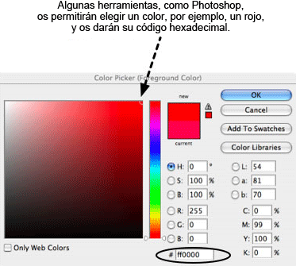

31. Imágenes de fondo en CSS
Nicole Sullivan. 26 de septiembre del 2008 Publicado en: repetir, adjuntar, sprite, prueba, posición
¡Admitidlo! Desde el primer apartado de este curso os habéis estado muriendo de ganas de aprender cómo conseguir que vuestra web quede impresionante y fabulosa. ¡Incluso es posible que os hayáis saltado los otros apartados para llegar a éste directamente!
Las imágenes de fondo sirven para hacer que vuestro sitio quede atractivo, pero quizá os sorprenda saber que están muy relacionadas con los conceptos fundamentales que ya habéis aprendido.
Tal como ya habéis visto en este curso, uno de los cambios más importantes que aporta el CSS es la capacidad para separar la presentación, o el aspecto de las cosas, de la semántica, o el significado de las cosas. La imagen de fondo de CSS es una de las herramientas más importantes que podéis utilizar porque permite aplicar imágenes decorativas en determinadas partes de vuestro HTML sin añadir peso adicional al HTML. Antes, los creadores web (¡como vosotros!) se veían obligados a llenar el código de etiquetas img.
El CSS, y sobre todo la propiedad background (fondo), hacen que vuestro HTML deje de estar abarrotado de elementos presentacionales. De esta manera, rediseñar un sitio o realizar otras transiciones de la vida de una página web creada con métodos modernos puede hacerse de una manera mucho más sencilla. Podréis actualizar toda la página cambiando únicamente la hoja de estilo en lugar de tener que grabar todas y cada una de las páginas HTML. Dependiendo del tamaño del sitio, esto puede ahorraros una gran cantidad de tiempo.
En este apartado veremos los conceptos básicos del funcionamiento de las imágenes de fondo de CSS, incluida la aplicación de una imagen de fondo a través de CSS, cómo ajustar su colocación, repetirla en vertical u horizontal y combinar imágenes de fondo con sprites CSS para mejorar el rendimiento del sitio.
Los contenidos de este apartado son los siguientes:
- 31.1. ¿Cómo funciona?
- 31.1.1. Propiedades de fondo
- 31.2. Crear un mensaje de alerta
- 31.2.1. El diseño
- 31.2.2. El código
- 31.2.3. Hacer pruebas con el código
- 31.2.4. Comprobar la calidad
- 31.3. Sprites
- Resumen
- Preguntas de repaso
- Lecturas complementarias
¿Cómo funciona?
El CSS para fondo se divide en varias propiedades. Utilizando estas propiedades, como position y color, podéis empezar a controlar el aspecto de vuestra página. En este apartado, repasaremos detalladamente las imágenes de fondo de CSS y crearemos un mensaje de alerta como ejemplo paso a paso.
Antes de nada, debemos saber más cosas sobre las diferentes propiedades que podemos utilizar.
31.1.1. Propiedades de fondo
| Propiedad | Definición | Descripción |
|---|---|---|
| Tabla 1. Propiedades de fondo | ||
background-color |
Establece el color de fondo del elemento de HTML. | Hay varias maneras de indicar el background-color o color de fondo, como incluir valores y palabras clave RGB. La mayoría de la gente utiliza la notación hexadecimal, un símbolo de almohadilla o barra (#) seguido de seis caracteres. La primera pareja indica los niveles rojos y la segunda y la tercera indican los niveles verde y azul respectivamente: #RRGGBB.
Hay muchas herramientas para elegir colores que pueden ayudaros a encontrar la notación hexadecimal de un color determinado. El rojo puro, por ejemplo, sería el #FF0000.

Los valores válidos incluyen un valor de color, transparent o inherit. |
image |
Indica la ruta o URL de la imagen de fondo. | Establece la background-image o imagen de fondo mostrando al navegador dónde encontrar la imagen utilizando la URL. Por ejemplo: url(alert.png). Fijaos en que la ruta va precedida de la palabra clave url y entre paréntesis. Esta sintaxis es importante para que el navegador entienda que queréis indicar una ubicación.
Los valores válidos incluyen una URL, none o inherit. |
repeat |
Indica en qué dirección se debe repetir la imagen de fondo. | Las imágenes pueden repetirse en vertical u horizontal, o en ambas direcciones, para llenar toda la anchura o altura de un elemento HTML. Utilizad background-repeat para indicar al navegador que repita una imagen de fondo.
Los valores válidos son repeat, repeat-x, repeat-y y no-repeat. |
attachment |
Define el comportamiento de la imagen de fondo cuando el usuario se desplaza. | Las imágenes pueden desplazarse con el contenido o quedarse fijas en la pantalla de visualización. Los valores válidos son: scroll, fixed e inherit. |
position |
Indica al navegador dónde colocar la imagen de fondo. | Las imágenes pueden mostrarse en cualquier punto dentro de los bordes del elemento de HTML en el que estén aplicadas. Utilizad background-position para colocar las imágenes con precisión o para crear efectos visuales y capas.
Hay muchas maneras útiles de indicar la posición, las palabras clave y los valores numéricos del fondo. Las palabras clave (como top y bottom) son muy útiles y fáciles de leer. Los valores en píxeles son muy precisos pero no se adaptan a los cambios de altura y anchura. Los valores de píxeles negativos son muy útiles cuando se utilizan sprites CSS, como veremos más adelante.
Cuando se utilizan sprites y píxeles, el punto inicial siempre es el extremo superior izquierdo del elemento HTML, aunque la manera de funcionar de la colocación de la imagen es algo diferente con píxeles o con porcentajes. Los píxeles siempre mueven la imagen un número concreto de píxeles hacia la parte inferior derecha de la caja contenedora (o hacia la parte superior izquierda si son valores negativos), sea cual sea el tamaño de la imagen y de la caja contenedora. Los porcentajes, en cambio, mueven la imagen un porcentaje de la diferencia entre la caja contenedora y el tamaño de la imagen. Si la imagen y la caja contenedora son igual de grandes, los porcentajes no moverán la imagen en absoluto. Los valores válidos incluyen length (normalmente en píxeles), percentage (de la anchura del elemento) y las palabras clave top, right, bottom, left y center. Fijaos en que center se puede utilizar para indicar un centro vertical u horizontal. Fijaos también en que podéis mezclar porcentajes y píxeles en las reglas, pero no palabras clave y píxeles ni palabras clave y porcentajes. |
background |
La propiedad abreviada que se puede utilizar para describir todo el resto de propiedades de una línea. | Las propiedades abreviadas son realmente prácticas. La mayoría de los desarrolladores las utilizan para mantener el CSS lo más sencillo posible y para agrupar propiedades relacionadas. Se puede escribir una regla general utilizando la abreviación y después anularla según sea necesario con propiedades específicas.
Las propiedades siempre se deberían indicar en el mismo orden para que los navegadores puedan interpretar fácilmente los estilos.
attachment):
background: green url(logo.gif) no repeat left top;. |
31.2. Crear un mensaje de alerta
Ahora que ya hemos visto la sintaxis básica necesaria, os enseñaremos cómo crear un ejemplo completo de caja de alerta que servirá para demostrar todos los aspectos de las imágenes de fondo.
31.2.1. El diseño
Pongamos por caso que un diseñador gráfico os ha presentado un boceto visual del mensaje de alerta que queréis crear para vuestro sitio web. Fijaos en que la alerta tiene el fondo de color naranja claro para diferenciarlo de los párrafos que lo rodean. También tiene un icono de alerta a diez píxeles del extremo superior izquierdo.
Fijaos en que el boceto sólo tiene una línea de texto, pero que en otros casos puede tener más. Uno de los rasgos más importantes del desarrollador web es prever cómo acabará evolucionando un diseño. En parte, respetar la visión artística de un sitio supone pensar en la consistencia desde que se inicia hasta que se rediseña. Por lo tanto, el mensaje de alerta podría incluir más de una línea de texto o incluso múltiples párrafos, listas u otros elementos HTML. Deberíais intentar ser tan agnósticos en cuestión de elementos como os sea posible. De esta manera, aumentarán las probabilidades de reutilización del código y el sitio web tendrá la máxima velocidad y eficiencia. El boceto es el que se ve en la figura 1:
Figura 1. El boceto del diseñador gráfico de la caja de alerta
El diseñador también os ha proporcionado el icono que debéis utilizar, como se muestra en la figura 2:

Figura 2. El icono de alerta
31.2.2. El código
Basándoos en todo lo que habéis aprendido de los fondos de CSS en la primera parte de este apartado, ya podéis ir pensando en cómo crear este mensaje de aviso. Os animamos a que lo probéis ahora mismo y que después comparéis el resultado con nuestro ejemplo.
Muy bien, ¿ya lo habéis probado? Vayamos paso a paso. Haced pruebas con el código, aumentad o reducid los valores e intentad probar alternativas. También puede ser que queráis ir siguiendo todos los pasos escribiendo cada línea nueva de código en una herramienta como por ejemplo Opera Dragonfly o Firebug para poder ir viendo los resultados de cada paso inmediatamente.
Nota
En la versión web, cada copia de pantalla tiene un enlace a ejemplos de código para que podáis comprobar la fuente en cada paso.
Crear el vínculo o selector de CSS
Para empezar, debéis crear una clase alert para que el CSS se pueda enlazar con él. Cread los ficheros esqueleto nuevos de CSS y HTML, enlazad el CSS en el fichero HTML y añadidle el código siguiente:
El CSS:
.alert { ... }El HTML:
<p class="alert">
<strong>Alert!</strong> The text of our alert message goes here.
</p>En este caso, hemos aplicado estilos a la alerta con un class y no con un id porque podría tener más de una alerta en la página, por ejemplo, en un elemento de formulario con varios errores. El CSS se debe hacer lo más flexible que se pueda y limitarlo todo a fin de que se corresponda al diseño cuando se crea el HTML.
Muy bien, pues ya tenéis unas bases, pero todavía parece un párrafo normal porque todavía no le habéis añadido ningún estilo. Hagámoslo.
Nota
Hemos decidido intencionadamente no limitar la clase alert a párrafos; las cajas de alerta también podrían contener fácilmente otros elementos. Deberíais dejar que el CSS tenga la máxima flexibilidad posible.
Añadir el color de fondo
Ya habéis aprendido cómo utilizar el color de fondo con los estilos de texto. Los mismos principios se aplican a cualquier elemento HTML y pueden combinarse con imágenes de fondo para crear efectos visuales. Si el color de fondo no se ha establecido ni heredado, será transparente por defecto.
Ved también
Podéis ver cómo utilizar el color de fondo con los estilos de texto en el apartado 29 de este módulo.
Añadimos el color de fondo naranja claro a la caja de alerta para que resalte entre el texto que tiene alrededor. No debería ser demasiado oscuro porque es importante que mantengáis un nivel razonable de contraste entre el texto y el color de fondo. Añadid la propiedad siguiente a vuestra regla de CSS:
.alert{background-color: #FFFFCC;}Ahora la caja de alerta se parecerá más a la figura 3:
Figura 3. Una caja de alerta con color de fondo añadido
Archivo fuente: "Figura 3"
Aplicar la imagen de fondo
Pasemos a añadir la imagen. La ruta a la imagen de fondo debe estar entre url(), como se observa en el código siguiente. Añadid la línea resaltada a la regla de CSS:
.alert{
background-color: #FFFFCC;
background-image: url(alert.png);
}Ahora la caja de alerta quedará como en la figura 4:
Figura 4. Se ha añadido la imagen de fondo, pero la repetición queda horrible.
Archivo fuente: "Figura 4"
Recordad que cada propiedad de fondo tiene un valor por defecto que se le aplicará si no especificáis ningún valor. Seguramente ya os habréis dado cuenta de que la imagen se repite por toda la alerta como si fueran las teselas de un mosaico. ¿Cuál es la conclusión de todo esto? Las imágenes de fondo están configuradas por defecto para repetirse tanto horizontal como verticalmente. Los fondos que se repiten son especialmente útiles para gradaciones de colores y patrones que llenan la pantalla o un elemento de HTML en concreto, pero en este caso no es lo que queremos.
Controlar la repetición del fondo
Figura 5. De manera parecida a nuestra imagen de fondo, estas teselas se repiten tanto en horizontal como en vertical.
Leer especificaciones puede ser una tarea intimidante, pero la especificación es muy buen lugar para averiguar cómo se supone que funciona el CSS antes de pasar ver con detalle la miríada de diferencias existentes entre navegadores. Echadle un vistazo a la parte de los colores y los fondos de la especificación del W3C e intentad encontrar la palabra clave para utilizarlos cuando no queráis que se repita una imagen de fondo. A continuación, la utilizaremos en un ejemplo.
¿Ya la habéis encontrado? Fijaos en que existe una sección para cada propiedad de fondo, background-repeat incluida. En Value veréis todas las opciones posibles, incluyendo repeat, repeat-x, repeat-y, no-repeat e inherit. Por defecto, las imágenes de fondo (iniciales) se repiten. No se especifica ninguna dirección, de modo que la imagen se repetirá tanto horizontal como verticalmente. Seguramente ya os habréis imaginado que no-repeat (sin repetición) es el valor que necesitáis para impedir que la imagen se repita en cualquier dirección. Añadid la siguiente línea resaltada a la regla de CSS:
.alert{
background-color: #FFFFCC;
background-image: url(alert.png);
background-repeat: no-repeat;
}Ahora la caja de alerta quedará como en la figura 6:
Figura 6. La caja de alerta con una única copia de la imagen de fondo (sin repeticiones)
Archivo fuente: "Figura 6"
Además, también podéis repetir en ambas direcciones (como si fueran teselas de un mosaico) o en ninguna. Las gradaciones suelen repetirse horizontal o verticalmente (podéis ver la figura 7). No es necesario que sepáis el tamaño del elemento HTML; sólo debéis cortar un trozo de la gradación y hacer que se repita en la dirección que queráis; ya sea "x" para horizontal o "y" para vertical. Los patrones a menudo se repiten en ambas direcciones y los iconos normalmente no se repiten. Más adelante examinaréis background-repeat con más detenimiento en otro ejemplo.
Figura 7. Las teselas o baldosas de este ejemplo sólo se repiten en horizontal.
Fijaos ahora en un ejemplo práctico de mi web, observad la figura 8:
El CSS que utilizamos para añadir este efecto decorativo es relativamente sencillo. Hicimos que el fondo se repitiera horizontalmente con repeat-x:
body{background-repeat:
repeat-x}Attachment
attachment permite especificar cómo funciona el fondo cuando el usuario desplaza la página hacia abajo. El funcionamiento por defecto es scroll, que hace que la imagen de fondo se desplace junto con el contenido.
Por otra parte, si se establece background-attachment en fixed, el elemento se queda fijo en la ventana del navegador, de modo que no se mueve cuando se desplaza el contenido de dentro del elemento en el que está adjunto. Esto crea algunos efectos extraños que sólo serán visibles cuando desplacéis la página por encima el elemento de HTML en el que está adjunto. La W3C lo utiliza para señalar el estado de las especificaciones, como por ejemplo la imagen de la "W3C Candidate Recommendation" de arriba del todo a la izquierda en sus especificaciones. Desplazad la página hacia abajo y veréis que la imagen se queda fija en el rincón superior izquierdo. Está adjunta al elemento body, de manera que siempre es visible.
Este paso no tendrá ningún efecto en nuestra visualización porque los navegadores establecen por defecto que las imágenes de fondo se desplacen, pero añadámoslo igualmente al código para que podáis ver cómo se utiliza la propiedad. Añadid la línea resaltada a la regla de CSS:
.alert{
background-color: #FFFFCC;
background-image: url(alert.png);
background-repeat: no-repeat;
background-attachment: scroll;
}Como se observa en la figura 9, la visualización de la caja de alerta no es muy diferente de como era antes.
Figura 9. No ha cambiado mucho, aún.
Archivo fuente: "Figura 9"
Colocar la imagen
La propiedad de colocación permite disponer la imagen de fondo exactamente donde queráis ponerla, tanto horizontal como verticalmente, en el elemento de HTML. Esta propiedad acepta palabras clave y valores como: top, center, right, 100%, -10%, 50px y -30 em.
En la figura 10 se muestran los valores que pueden utilizarse para colocar las imágenes de fondo en diferentes posiciones.
![Ejemplos de posibles posiciones del fondo. En un rectángulo de 350 por 90 píxeles vemos ejemplos de imágenes posicionadas con su código. Arriba a la izquierda con left, top, o con 0, 0; arriba centrado horizontalmente con center, top, o con 50%, 0; arriba a la derecha con right, top, o con 100%, 0; centrado vericalmente, a la izquierda con left, center, o con 0, 50%; centrado con center, center, o 50%, 50%; centrado verticalmente y a la derecha con right, center, o 100%, 50%; abajo a la izquierda con left, bottom, o 0, 100%; centrado horizontalmente y abajo con center, bottom, o 50%, 100%. -50px, 50px hace que el centro de la imagen esté a 60 píxeles del margen superior y que sobresalga 25 píxeles por la izquierda. 350px, 60px sitúa el centro de la imagen a 350 píxeles del borde izquierdo y 60 píxeles por debajo del borde superior; finalmente, 350px, -60 px sitúa el centro de la imagen 60 píxeles por encima del borde superior, 350 píxeles a la derecha del borde izquierdo.](76510_m6_26.gif)
Figura 10. Varios ejemplos de posición del fondo mediante palabras clave, porcentajes y píxeles
Pasemos ahora a colocar la imagen de fondo: queréis que quede en el extremo superior izquierdo, pero sin tocar los lados, de manera que necesitáis establecer una distancia de 10 píxeles tanto desde el límite superior como desde el izquierdo. Esto se puede hacer añadiendo la siguiente línea resaltada en la regla CSS. Hacedlo ahora.
.alert{
background-color: #FFFFCC;
background-image: url(alert.png);
background-repeat: no-repeat;
background-attachment: scroll;
background-position: 10px 10px;
}El primer valor es la distancia horizontal y el segundo, la vertical. En este caso, son el mismo. Ahora la caja de alerta quedará como en la figura 11:
Figura 11. Hemos utilizado la colocación para situar la imagen de fondo.
Archivo fuente: "Figura 11"
Consejo
Utilizad o bien sólo palabras clave o bien sólo valores numéricos, ya que los navegadores antiguos puede que ignoren vuestra declaración si los utilizáis los dos a la vez. Si utilizáis right y bottom, conseguiréis lo mismo que 100% horizontal y verticalmente.
Utilizar la abreviación para combinarlo todo como un profesional
Como ya habéis podido observar, algunas propiedades de CSS pueden combinarse. Por ejemplo, el fondo y todas las subpropiedades relacionadas. El código de CSS que hemos escrito hasta ahora se puede reescribir abreviadamente así:
.alert{background: #FFFFCC url(alert.png) no-repeat scroll 10px 10px;}Consejo
Cuando combinéis subpropiedades de background, poned siempre las propiedades en el orden siguiente. Es importante tanto para la compatibilidad de todos los navegadores, como para la organización y el mantenimiento de la hoja de estilo:
colorimagerepeatattachmentposició
horizontalposició
vertical
Intentad sustituir el CSS antiguo con la abreviación anterior, y vuestro ejemplo os debería quedar exactamente igual. Podéis ver la figura 12.
Figura 12. ¡La abreviación funciona de maravilla!
Archivo fuente: "Figura 12"
31.2.3. Hacer pruebas con el código
La mejor manera de recordar todos los detalles de CSS es probar las opciones uno mismo. Intentad cambiar algunas de las propiedades del ejemplo y ved cómo queda. Estableced la background-position a 100% 100%, y fijaos en que da el mismo resultado que utilizar las palabras clave de right y bottom. ¿Y si lo cambiarais a -5px 0? ¿Por qué creéis que ahora no podéis ver parte de la imagen?
31.2.4. Comprobar la calidad
Hacer pruebas es extremadamente importante para ofrecer una buena experiencia de usuario. El hecho de que el sitio funcione bien en vuestro equipo con vuestra configuración específica no quiere decir que se vea bien en todos los ordenadores. Cuando comprobéis la caja de alerta, deberíais seguir estos pasos básicos mínimos:
Aumentad o reducid la cantidad de texto en el interior de la alerta.
Aumentad el tamaño del texto de vuestro navegador como mínimo dos niveles. ¿Habría sido mejor utilizar ems para colocar la imagen? ¿Y qué sucede cuando aumentáis el tamaño del texto?
Aplicad la alerta
classa otros elementos comodiv,p,ul,strongoem. ¿Qué necesitáis cambiar para hacer que la clase sea agnóstica?Incluid unos cuantos párrafos y una lista dentro del
divde la alerta. ¿Aún funciona el código?Verificad la alerta visualmente en los navegadores de grado 1 (también llamado grado A). Mi consejo es que escribáis para buenos navegadores y adaptéis para Internet Explorer después de que funcione el código.
Realizar una serie rigurosa de pruebas forma parte del proceso de aprender a escribir CSS. Si vais con mucho cuidado a la hora de aprender, acabaréis yendo muy rápido.
31.3. Sprites
Los usuarios lo quieren todo. Quieren que vuestro sitio sea atractivo, interactivo y, encima, rápido, pero incluir grandes cantidades de imágenes de fondo de CSS puede ralentizar mucho la web, ya que cuantas más peticiones HTTP hagáis, más lento será el sitio (una petición HTTP es cuando el ordenador está accediendo a una página web y necesita pedir al servidor que le envíe otro valor que compone el sitio, como un fichero o una imagen de CSS; cada petición